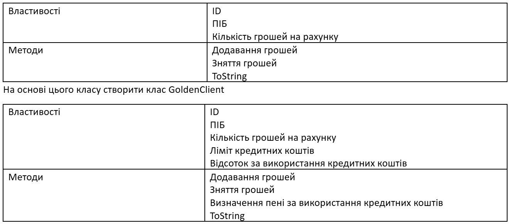

Домашнє завдання №21
-
Задачі по Date
РішенняЗадача 1. Виводити на екран скільки хвилин користувач вже на сайті
Задача 2. Вводимо час початку процедури (процедура триває 30хв). Визначити, чи процедура ще триває.
Задача 3. Визначити скільки залишилось до кінця робочого дня (до 17.00)
Задача 4. Створити функцію, яка дозволяє визначити, чи знаходиться вказана дата і час у межах поточного тижня (від понеділка 0 год, 0хв, до неділі 23год.59хв)
Задача 5. При заході на сайт вітати користувача або відображати повідомлення про те, скільки хвилин залишилось до початку робочого дня (початок о 8.00).
Задача 6. Вивести скільки зараз годин у Лондоні, Парижі, Сіднеї.
Задача 7. Дано список студентів (ім’я і дата народження: у формі тексту (день.місяць.рік). Знайти найстаршого студента
Задача 8. Визначити скільки пройшло секунд після заходу на сайт перш ніж користувач зробив рух мишкою.
Задача 9. Користувачка планувала оформила дектретну відпустку на 200 днів (дата початку відпустки вводиться). Визначити чи відпустка вже триває і чи не закінчилась.
Задача 10 . Дано дата виробництва йогурта (вводимо рік, місяць, день) та кількість днів придатності. Визначити чи є він придатним на даний момент.
Задача 12. Сформувати масив з 1000 елементів від 1 до 800. Порівняти час сортування бульбашкою і вставкою.
-
Задача 4
РішенняКористувач задає місяць навчання учня (перевіряти чи є числом, чи від 1 до 12, чи не канікули) та оцінку (перевіряти чи є числом, чи від 1 до 100). Вивести чи зможе він виправити оцінку (якщо оцінка погана і це не останній місяць у семестрі) . Обробку усіх помилок зробити з використанням відповідних класів.
-
Задача 1
РішенняСтворити клас Client
